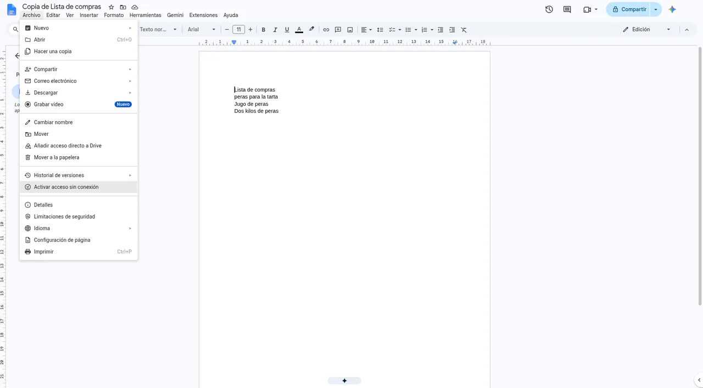
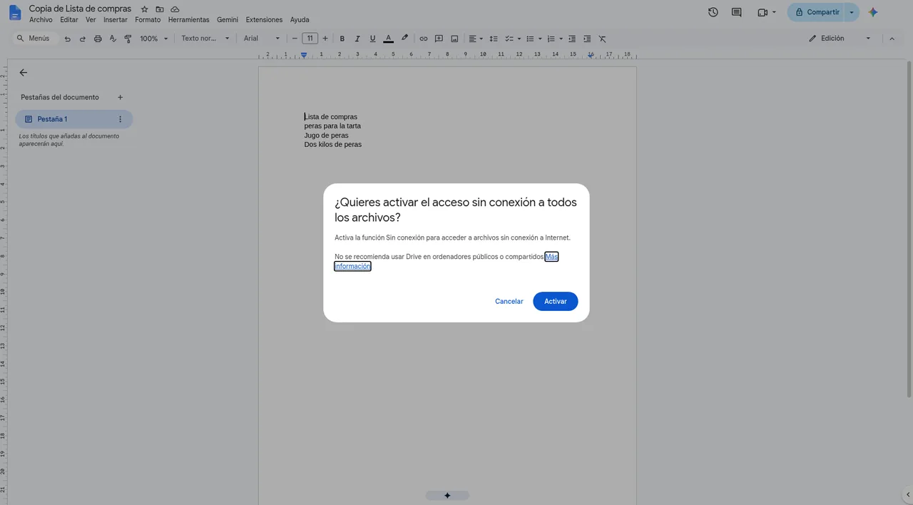
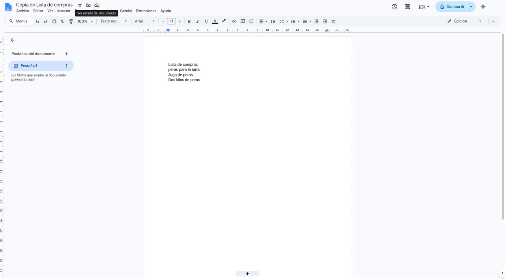
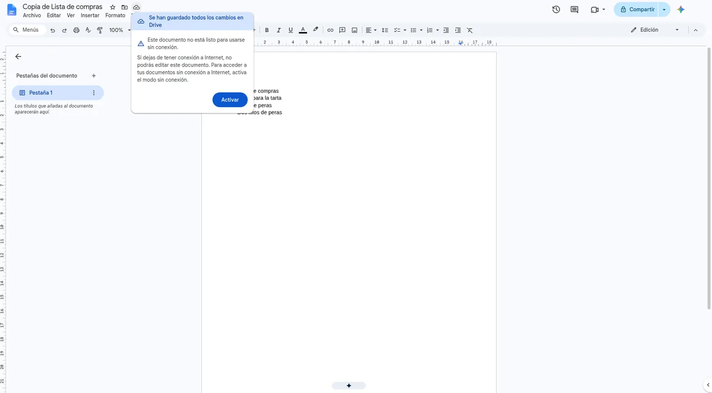

Curso de Google Documentos › Archivo › Lección 8
Lección 8 de 53 · menú Archivo
Cómo usar Google Docs sin conexión a Internet
Fecha del video: · Programado
¿Te quedaste sin Internet? Así activás el acceso sin conexión en Google Docs desde el menú Archivo.
En el ejemplo usamos una copia de prueba de «Lista de compras». El aviso se canceló; no se activó el modo sin conexión en esta computadora.
Paso 1: abrí Archivo → Activar acceso sin conexión
Andá a Archivo y tocá «Activar acceso sin conexión».

Paso 2: confirmá o cancelá el aviso
Aparece el aviso «¿Quieres activar el acceso sin conexión a todos los archivos?». Si querés, elegí «Activar». En una computadora pública o compartida no se recomienda: ahí tocá «Cancelar».

Paso 3: mirá el estado en el ícono de la nube
Para saber si el documento quedó listo, tocá el ícono de la nube, al lado del título («Ver estado del documento»). Ahí te dice si está listo para usarse sin conexión o si todavía hace falta activarlo.


Mirá el Short
Estreno del Short: 24/11/2026 · 17:00 (hora Argentina)
Video relacionado: Google Docs: menú Archivo paso a paso (tutorial completo) — el video largo del menú Archivo (verlo en YouTube).
Fuente oficial: Ayuda de Editores de Documentos de Google. Capturas propias en un documento de ejemplo («Lista de compras»). El video usa voz generada con IA.